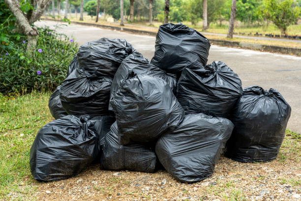

Professional Rubbish Removal Services
Fast, Affordable Waste Disposal in Auckland
Vortex Cleaning provides reliable rubbish removal services for homes and businesses across Auckland. We handle all types of waste removal with proper disposal methods.
What We Remove
Construction Debris
Renovation waste, building materials, timber, drywall, and rubble

General Waste
Household junk, garden waste, packaging, and non-recyclables
Furniture
Sofas, beds, tables, chairs, cabinets, and other bulky items
Appliances
Refrigerators, washing machines, dryers, ovens, and more
Items We Cannot Accept
- Hazardous Materials: Asbestos, chemicals, paint, batteries, motor oil
- Medical Waste: Needles, syringes, pharmaceutical drugs
- Explosives/Flammables: Propane tanks, gas cylinders, fireworks
- Large Restricted Items: Tyres, untreated timber, concrete/soil (over 20kg)
Need Rubbish Removed?
Contact us for a free, no-obligation quote on your rubbish removal needs. We provide same-day service for urgent jobs.
Get a Free QuoteWhy Choose Our Rubbish Removal Service?
- Fast service - Often same-day availability
- Competitive pricing - No hidden fees
- Proper disposal - Environmentally responsible methods
- Fully insured - For your peace of mind
- All areas of Auckland - We come to you